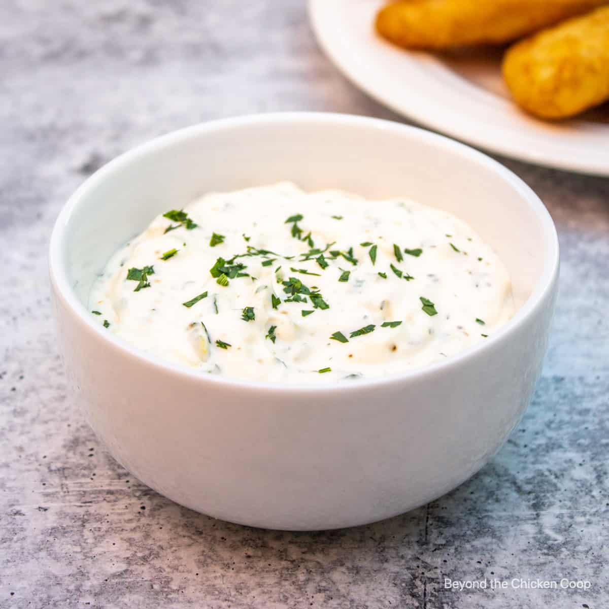

Dad's Homemade Tartar sauce

Description:
Quick, delicious, and easy homemade tartar sauce.
Ingredients
- Capers
- lemon zest
- Mayo
- Dill
How to make:
- Mash capers in bowl
- Add mayo to bowl, mix well
- Add dill and lemon zest, and mix
- Serve and enjoy
It will take some practice getting the amounts right for your own taste. However, be not afraid of capers!